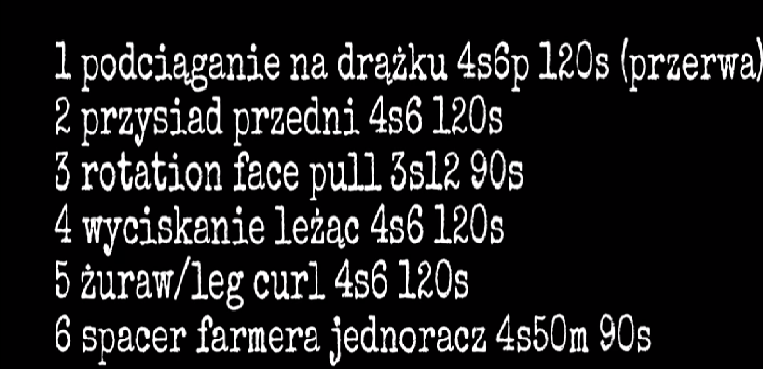

Trening redukcyjny
Przykładowy trening

Według mnie pierwszą i najważniejszą rzeczą jest określenie realnego celu, który może zostać osiągnięty w konkretnym czasie, będzie to stanowiło naszą motywację. Wiele osób potrzebuje „bata” nad głową, wyznaczonego czasu, aby móc optymalnie go wykorzystać.
Jeśli masz możliwość, możesz sprawdzić swój poziom tkanki tłuszczowej na specjalistycznej wadze lub użyć w tym celu kalipera, który jest bardzo dokładny w pomiarze. Co powinieneś zrobić w przypadku, gdy nie masz takiej możliwości? Nic nie szkodzi, możesz zrobić zdjęcia, które później będziesz porównywać, aby zobaczyć efekty. Dokonaj także pomiarów centymetrem krawieckim, możesz się również zważyć.
Warto pamiętać, że pomiary należy wykonywać co tydzień lub co dwa tygodnie. Nie należy dokonywać pomiarów codziennie i stresować się brakiem efektów. Taka postawa może podnieść poziom kortyzolu w naszym organizmie, a co za tym idzie – utrudnić odchudzanie. Następnym krokiem jest ustalenie odpowiedniego sposobu działania. Co to oznacza? Przygotowanie odpowiedniego planu treningowego oraz planu dietetycznego i rozpoczęcie ich stosowania.